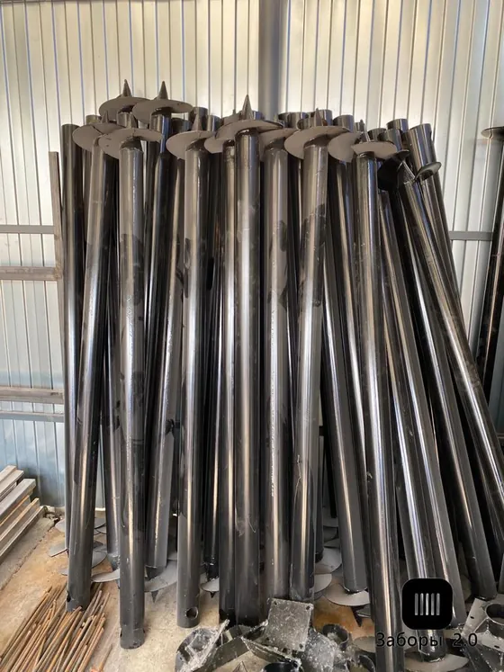
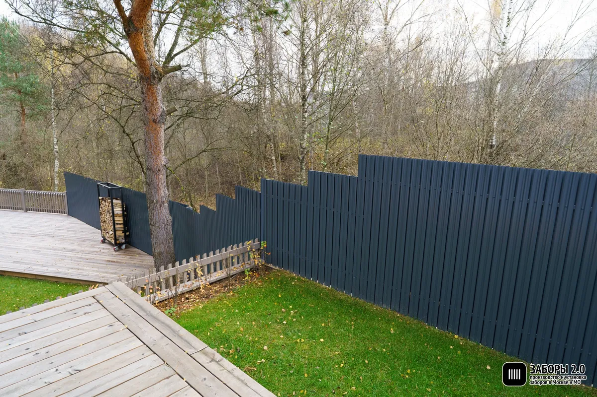
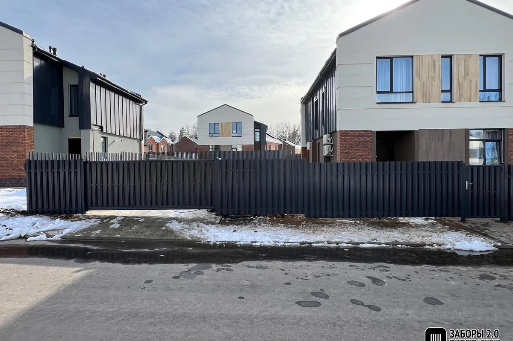
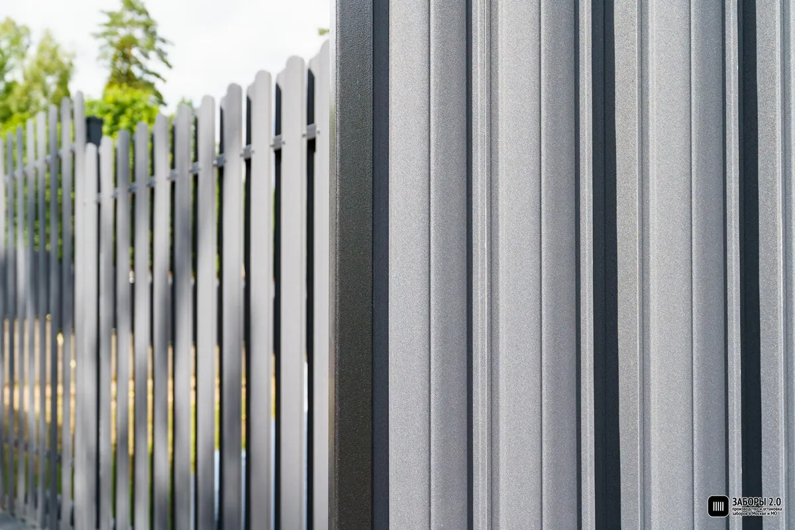
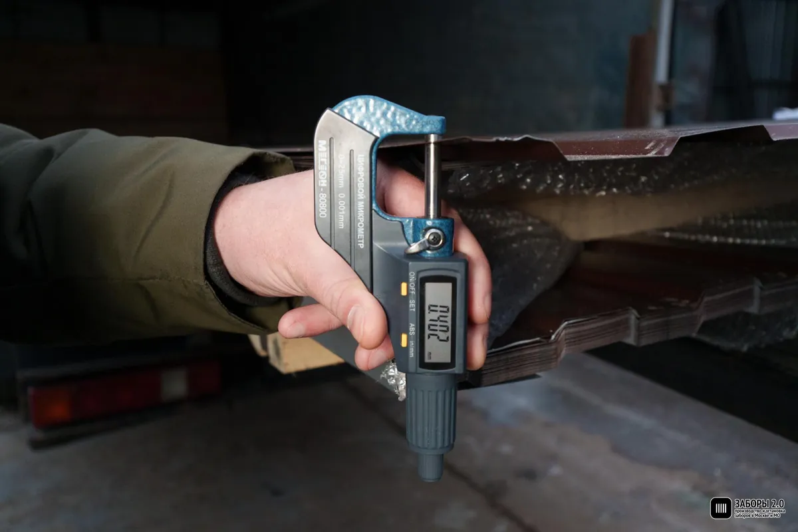
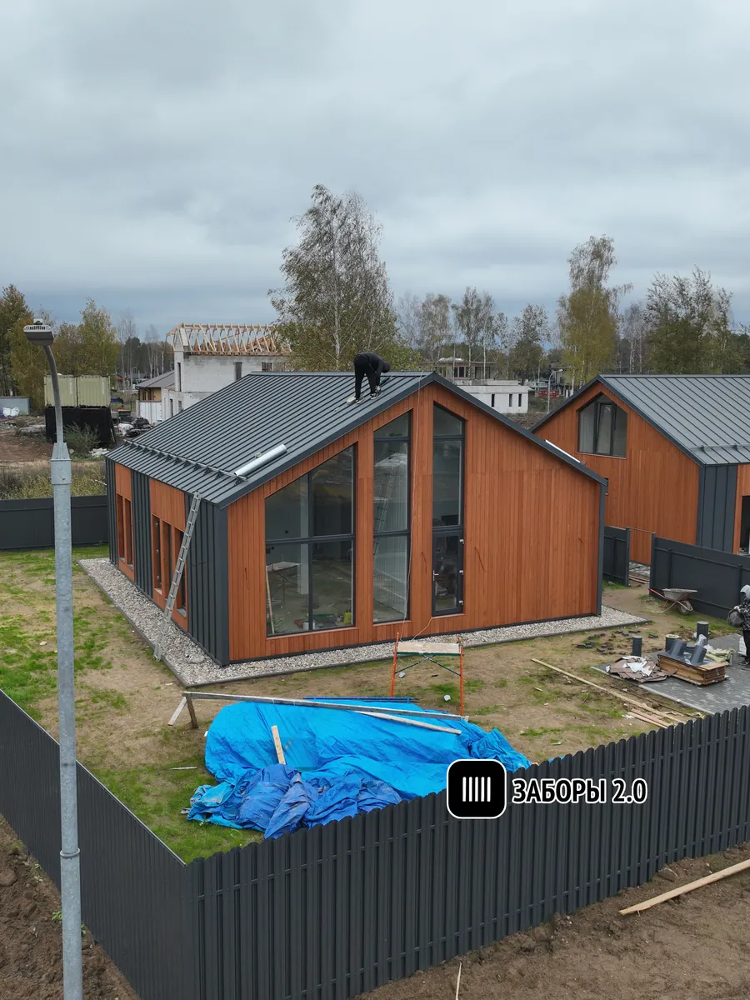

+7 (495) 085-13-99
Ежедневно 09:00–21:00
Бесплатный замер
Замер
Опора закручивается в грунт и принимает нагрузку сразу. Бетонировать не нужно — монтаж идёт круглый год.
Евроштакетник на винтовых сваях — исполнение, где опора закручивается в грунт и принимает нагрузку с первой минуты. Бетонирование не выполняется: ждать набора прочности нечего, мокрых процессов нет, монтаж идёт круглый год. Перепад высот на участке отыгрывается разной глубиной закручивания, а не подсыпкой. Зазор между штакетинами снижает ветровую нагрузку — связка получается легче глухого забора той же высоты. Замер по Москве и основной зоне области бесплатный, срок работ — от двух до семи дней.
Тип полотна и основание уже выбраны — этой страницей. Осталось указать размеры и стороны.
Труба с лопастью ввинчивается до плотного слоя и опирается на неразработанный грунт. Бетон не заливают — значит, нет и риска, что он схватится неравномерно. Столбы, лаги и штакетник ставят тем же выездом или на следующий день.

Глухой забор той же высоты работает как парус. У евроштакетника полотно продувается, и опора нагружена мягче — требования к заглублению ниже. Типоразмер под участок: Ø 76 мм, длина 2500 мм, стенка 3,5 мм.
Каждая свая идёт на свою глубину, верх опор выводится в линию. Ленте для того же нужна ступенчатая опалубка и планировка грунта. Полотно ведут уступами по рельефу или по единой линии верха — выбирают на замере.

Мёрзлый верхний слой проходится. Ограничивает не температура, а состав грунта на глубине — скальные включения и мусор в насыпи мешают в любой сезон. «Зимой нельзя» — миф, «на этом участке нельзя» — вопрос замера.

Разброс задаёт длина, ворота и калитки, дополнительные работы. Точный срок фиксируется в договоре вместе с комплектацией и стоимостью.
| Полотно | Металлический евроштакетник, монтаж с зазором |
|---|---|
| Толщина металла штакетины | 0,5 мм, ГОСТ Р 52146 — проверяется микрометром при закупке |
| Покрытие | Полимерное, полиэстер, 25 мкм |
| Цвета | Серый графит, Белый, Золотой дуб |
| Высота полотна | 1,5 – 2,5 м |
| Шаг между штакетинами | 50 мм |
| Опора | Винтовая свая, Ø 76 × 2500 мм, стенка 3,5 мм |
| Шаг опор | 2,5 м |
|---|---|
| Лаги | Профильная труба 40 × 20 × 1,5 мм |
| Крепление штакетины | Вытяжная заклёпка, 4 шт. на штакетину |
| Сезон монтажа | Круглый год, включая отрицательные температуры |
| Срок работ | 2 – 7 дней |
| Гарантия | 2 года на материалы и монтаж, фиксируется в договоре |
| Оплата | Поэтапная; финальная часть — после сдачи согласованного объёма |


Параметры уточняются на замере: грунт и рельеф влияют на длину сваи и шаг опор.
Честнее сказать заранее, чем обнаружить на монтаже.

Скальный и щебенистый грунт. Лопасть не проходит плотное каменистое основание.
Насыпь со строительным мусором. Свая упирается в обломок выше расчётной отметки.
Подвижные и обводнённые грунты. Длину сваи подбирают под участок, типовая не годится.
Ворота и калитки. Сами конструкции и автоматика к ним — отдельные позиции сметы.
Демонтаж старого забора. Снос, вывоз, расчистка линии и спил кустарника вдоль неё.
Сопутствующее. Земляные работы под коммуникации, перенос опор освещения, восстановление газона после проезда техники.
Если грунт на участке не подходит для сваи, в той же подкатегории есть два решения.
Сплошное основание по линии забора: закрывает просвет у земли и удерживает грунт на склоне. Требует бетонных работ и паузы на набор прочности.
Евроштакетник с кирпичными столбамиКогда важен вид со стороны улицы: металлические секции между кирпичными опорами, чаще всего с ленточным основанием под всю линию.
Это одно из исполнений в подкатегории. Сравнить его с вертикальным, горизонтальным, двусторонним и шахматным монтажом, а также посмотреть отделку под дерево можно в общем разделе — заборы из евроштакетника.
Все виды евроштакетникаУточняем задачу, длину линии, адрес и удобное время выезда.
Инженер проверяет рельеф и грунт, определяет длину свай и шаг опор.
Фиксируем комплектацию, стоимость, сроки, этапы оплаты и гарантию.
Закручиваем сваи, ставим лаги и штакетник, сдаём объект.
Все снимки на странице — своя съёмка объектов и цеха. Стоковых фотографий нет ни в портфолио, ни в иллюстрациях.

Забор поставлен до окончания стройки: сваям не нужна пауза на бетон, а огороженный участок можно закрыть от посторонних уже на этапе коробки.

Пушкинский г.о. · 74 м · 4 дня

Мытищинский г.о. · 52 м · 3 дня

Одинцовский г.о. · 96 м · 6 дней
Грунт, перепад высот, коммуникации в пятне закручивания — это видно только на месте. Выезд по Москве и основной зоне области бесплатный.
Скриншоты с внешних площадок, без правок. Микроразметкой не размечаем: по отзывам о самом себе звёзды в выдаче не показываются с 2019 года, а риск санкций за такую разметку — реален.


Уточним задачу, согласуем удобное время и приедем на замер. Ничего платить на этом шаге не нужно.